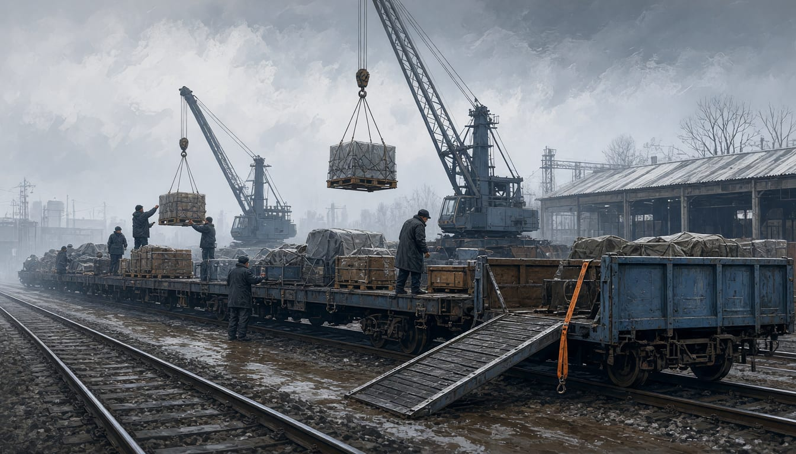

Le Pen tells Ukraine's ambassador she would end new financial aid to Kyiv
France has provided nearly 7.9 billion euros in direct bilateral aid since February 2022, according to the Kiel Institute. Macron, speaking from Cambodia, warned that cutting support would push Ukraine towards an unjust peace.

Marine Le Pen, the Rassemblement National candidate in the presidential election, told Ukraine's ambassador Vadym Omelchenko in Paris on 16 November that, if elected, she would end new financial aid to Ukraine. She cited the state of public finances. She said she would honour commitments already made, notably the European Union's 90 billion euro loan to Kyiv.
France is, according to Euronews, the second-largest European contributor to Ukraine's war effort, behind Germany with 30 billion euros cumulated. By the Kiel Institute for the World Economy's count, France has given nearly 7.9 billion euros in direct bilateral aid since February 2022, including 6.2 billion in military aid. On the Kiel Institute's count, France's share of European financing of about 18 billion euros brings the total to 27.2 billion euros. Le Pen said she would continue to support Ukraine through donations of equipment, humanitarian aid and what she called a much more active diplomacy.
In October 2026, Le Pen said she would maintain financial aid to Ukraine for six months if elected president in May 2027, then cease it, calling it a message of honesty towards President Volodymyr Zelensky. Omelchenko said the meeting covered support to Ukraine, its prospects of joining the EU and Nato, bilateral relations and post-war reconstruction.
On 14 November, from Phnom Penh, Cambodia, Emmanuel Macron warned against cutting back French support to Kyiv. Those who want to ration Ukraine's means, he wrote without naming Le Pen, want in truth to force it into an unjust peace and lasting vulnerability, and Europe's with it. In October, Foreign Affairs Minister Jean-Noël Barrot had already called her stance that of a sham patriot. Zelensky, meanwhile, told the Financial Times that France stood only to gain from its cooperation with Kyiv, notably in arms technology, and said Le Pen does not master certain details well.
Le Pen said on 13 November that she was ready to meet Zelensky in Brussels and would tell the ambassador so, saying the financing question now shakes Europe. The Rassemblement National said the discussion also envisaged a strategic partnership between Paris and Kyiv, in digital, the defence industry and civil nuclear, once the conflict ends.